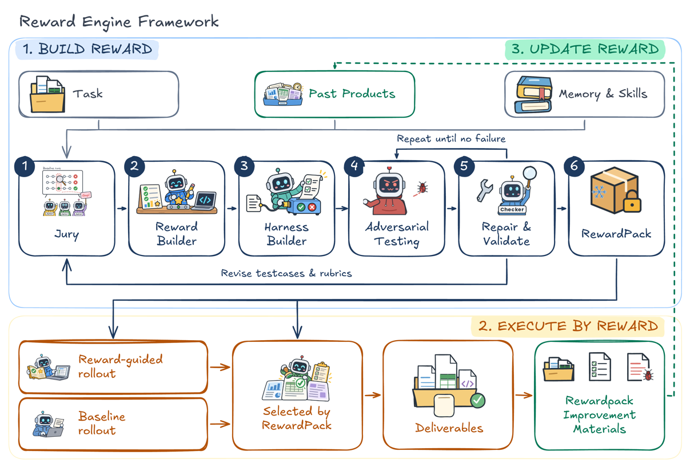
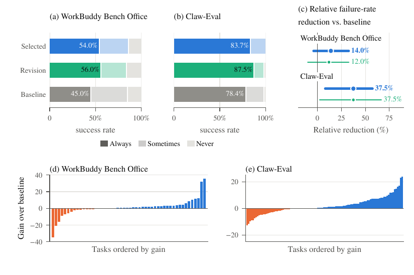
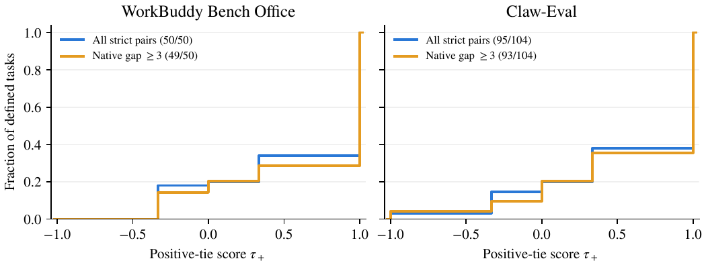

TL;DR — un pipeline multi-rôles (Jury → Builder → QC → RewardPack gelé → Critic → sélection) qui construit par LLM un cahier des charges exécutable par tâche à partir du seul énoncé public et de trois rollouts initiaux, puis s'en sert pour réviser et sélectionner la livraison. Aucun RL, aucun poids mis à jour : « The weights of $\pi$ are never updated » [§2], et la branche RL est « a possible extension and is not evaluated » [Fig. 1]. C'est un système d'inference-time refinement + reranking.
Claim principal, précisément : le reward construit ne renverse pas l'ordre du grader de référence sur 82,33 % et 80,53 % des paires de candidats [Tab. 4], et porte le Pass³ de 45,00 → 54,00 % et 78,37 → 83,65 % [Tab. 2].
⚠️ Mon évaluation, et c'est le cœur de ce mémo : les trois propriétés qui définissent la méthode dans son propre tableau comparatif [Tab. 5] — counterexample testing, regression gate, executable checks — sont, dans les runs évalués, soit désactivées, soit inexistantes.
adversarial_review_enabled=False câblé en dur dans la campagne Claw-Eval (experiments/claw_eval/opencode/campaign.py l. 191 et l. 546, continue_rounds.py l. 279) et pris par défaut dans WorkBuddy (experiments/workbuddy/experiment.py l. 678 n'passe pas l'argument ; reward_engine/core/outcome/loop.py l. 184 : adversarial_review_enabled=False). Une recherche sur tout le dépôt ne trouve =True que dans tests/unit/. Donc le self-attack (§3.2, Éq. 2-3) et le regression gate (Prop. 1) n'ont tourné dans aucune des deux campagnes. Le papier ne le dit jamais.evidence.review, kind="model_assisted" (« Grounded semantic Outcome check »), et json.parse, déterministe mais « Syntax only, not data accuracy » [harness.py l. 1603-1612]. Tout check généré par Builder est enregistré kind="model_assisted" [harness.py l. 627-638]. La part déterministe du verdict est donc nulle.src/appendix.tex l. 456-467). Elle révèle que les égalités du reward sont comptées comme des non-renversements : a = (C+T)/N, et que la variante neutre (C+T/2)/N était calculée mais non reportée.Les auteurs affirment un dispositif testé avant usage ; ce qui a été évalué est un juge LLM monolithique non calibré, gelé par défaut d'alternative.
testcase ou rubric, conserve origine / applicabilité / ancres fail-partial-full. « Resolve disagreement through task evidence, not vote counts » [P4]. Chaque phase exige au moins deux brouillons exploitables ; en dessous, pas de spécification publiable [App. B.2].
4. Builder — Reward Builder affine les ancres, Harness Builder lie chaque critère à des inputs, outils et procédures de jugement [§3.1].
5. QC — self-attack + réparation sous régression gate. Désactivé dans les deux campagnes évaluées (voir §0 et §3).
6. Gel de la dernière version pour l'étage d'exécution.MEASUREMENT_TOOLS.md] : calculate (expressions numériques), code.run (« a restricted numeric Python subset over JSON inputs », pas de Python arbitraire ni d'install de dépendances), document.read (lecture des pièces fournies, récupération optionnelle d'URL HTTPS déjà observées via Tavily), cuda.run. Budget de mesure : 2 tours de requête, 4 appels d'outils au total par check.model_assisted » [MEASUREMENT_TOOLS.md]. Les outils collectent des preuves ; ils n'émettent jamais de verdict. L'exemple canonique du papier — « the completion-rate test recomputes the rate from the source rows » [§3.1] — se résout donc en : calculate renvoie 78, le reçu est passé au juge, le juge décide pass/fail/unknown.group_concurrency 2, model_concurrency 8 [campaign.py l. 196-201].ARMS.md].jury_reduce_max_bytes=160000 par défaut, surchargé par Role.request_budget_bytes dans les deux campagnes [loop.py l. 202, experiment.py l. 687]. ⚠️ Donc la question « la compaction casse-t-elle la trajectoire ? » est sans réponse ici, et comme rien n'est entraîné, elle n'invaliderait aucun ratio d'importance — mais elle resterait à poser avant tout portage en RL.⊥ = preuve insuffisante (statut normal) ; exception de parser ou d'outil = erreur d'exécution, consignée dans le reçu, qui « n'établit ni une violation ni sa cause » [§2, App. B.1] ;MEASUREMENT_TOOLS.md] ; « Execution errors and insufficient evidence are not, by themselves, product defects » [core/outcome/README.md] ;Juge LLM de bout en bout, avec outils en amont pour aller chercher la preuve. Le reward est un vecteur, pas un scalaire [Éq. 1] :
R = {(c_i, κ_i)}_{i=1..m}, R(y) = (κ_i(y;x))_{i=1..m}, κ_i(y;x) = (z_i, e_i)
⚠️ La distinction testcase/rubric est une distinction d'espace de valeurs, pas de mécanisme de vérification. Un « testcase for required correctness » n'est pas un test programmatique : c'est un critère dont le juge doit répondre par pass ou fail au lieu de fail/partial/full. Le papier n'affirme nulle part le contraire, mais l'abstract (« testcases for required correctness and rubrics for graded quality, each executed as a check ») se lit naturellement comme une séparation code/juge. Elle n'existe pas.
Le papier refuse explicitement d'en imposer une :
« No scalar is imposed. A consumer that needs one supplies a reduction rule, under which $(\mathsf{pass},\bot)$ earns no implicit partial credit and an all-unknown tuple remains unresolved; hard or soft kinds and priorities imply no global weights, vetoes, or aggregation rule. » [App. B.1]
Trois consommateurs, trois réductions [§2] :
pas d'actor : a_t ~ π(·|h_t), h_{t+1} = h_t ⊕ (a_t, o_{t+1})
revue finale : f ~ Critic_R(·|h_T, R_S(y_T)), h'_T = h_T ⊕ f
avec $S$ = les checks ciblés par la revue, au plus trois [Éq. 5, Tab. 8]. « Because unselected checks stay unverified, stopping does not certify that the whole RewardPack passes » [§3.3].
y* = max_≻ ( {y°} ∪ Y⁺ ),
Y⁺ = { y ∈ Y_n : y ≻ y°, aucun test de R que y° passe n'échoue sur y }
R_known = P / (P + F) P = pass, F = fail, U = unknown parmi K critères
Les unknown sont retirés du dénominateur. Part moyenne de critères résolus $(P+F)/K$ : 89,7 % sur WorkBuddy et 99,1 % sur Claw-Eval, avec des minima de 7,7 % et 66,7 %. ⚠️ Sur au moins une tâche WorkBuddy, le score du reward est donc un ratio calculé sur 7,7 % de ses propres critères, les 92,3 % restants étant unknown et ignorés.
Réponse directe à la question de la clause d'échec : il n'y en a aucune, à aucun des trois étages.
core/outcome/README.md].unverified; they gain neither case support nor critical-protection authority » [core/outcome/README.md l. 17]. Les critères non validés n'ont donc aucune autorité de protection, ce qui vide le veto de l'Éq. 4 de ce qui lui restait de mordant.⚠️ Conséquence pour le droit, et c'est la raison pour laquelle ce papier ne résout pas le problème qu'on lui prête : une agrégation $P/(P+F)$ ne peut pas rendre l'omission plus coûteuse que l'erreur. Au contraire, elle fait l'inverse — un critère omis sort en ⊥ et est retiré du dénominateur, donc ne coûte rien du tout, tandis qu'un critère traité et raté sort en fail et coûte un point. Le dispositif récompense structurellement le silence. Les auteurs ont vu la moitié du problème : les obligations « deferred or cannot be mapped » sont consignées dans un « separate coverage ledger » [Tab. 7] — excellent réflexe. Mais aucun chiffre de couverture n'est reporté, et le ledger n'entre dans aucune des trois réductions.
Aucun. Pas de KL (rien n'est entraîné), pas de terme de longueur, pas de pénalité de format, pas de bonus de concision.
Non. Ni l'un ni l'autre, jamais, sur aucun des deux benchmarks. Le papier ne contient aucune mesure de faux positifs, aucune de faux négatifs, et a fortiori aucune avec des dénominateurs distincts. La seule quantité de fiabilité rapportée est l'order agreement [Tab. 4], qui est une métrique de rang, pas de justesse, et qui ne distingue pas le sens de l'erreur.
| Quantité | Valeur | Source |
|---|---|---|
| Order agreement, WorkBuddy, toutes tâches | 82,33 % [74,67, 89,33] | [Tab. 4] |
| Order agreement, WorkBuddy, tâches distinguables | 84,69 % [77,21, 91,50] | [Tab. 4] |
| Order agreement, Claw-Eval, toutes tâches | 80,53 % [74,75, 86,08] | [Tab. 4] |
| Order agreement, Claw-Eval, tâches distinguables | 81,72 % [75,96, 87,21] | [Tab. 4] |
| $\tau_+$ correspondant | 0,647 / 0,694 / 0,611 / 0,634 | [Tab. 4] |
Et ce que la définition commentée révèle sur ces quatre nombres :
deepseek-v4-flash call » [App. F.5 commentée]. Le chiffre de tête ne mesure donc pas les checks liés, les recettes d'outils ou les reçus : il mesure un juge LLM monolithique à qui on a donné la liste des critères.Il n'y a aucun plafond de bruit, et la situation est pire que son absence.
deepseek-v4-flash [App. F.5 commentée]. Le grader natif de Claw-Eval est « a custom DeepSeek V4 Flash judge » [Tab. 8]. Le juge rubrique natif de WorkBuddy a été rejoué « with DeepSeek V4 Flash via OpenLux » [App. E.6]. Et l'actor est DeepSeek V4 Flash [Tab. 8]. « 80,5 % d'accord avec le grader » mesure donc, sur Claw-Eval, l'accord de DeepSeek V4 Flash avec DeepSeek V4 Flash sur des sorties de DeepSeek V4 Flash. Ce n'est pas une validation externe : c'est une mesure de cohérence interne d'un seul modèle, et elle fixe elle-même son propre plafond. Les trois quantités que le skill audit-verifieur demande de ne jamais confondre sont ici fusionnées en une seule.CompositeVerifier avec un poids déterministe de 0,70 à 0,95 sur 150 reçus finaux [App. E.1.1] : la comparaison y est donc un peu moins incestueuse, et c'est précisément là que l'order agreement est le plus haut (82,33 vs 80,53). Trop peu pour en tirer quoi que ce soit, mais le signe va dans le sens attendu.Modèles : voir base_model. Un même modèle, DeepSeek V4 Flash, occupe l'actor, le juge de mesure et les deux graders natifs ; Jury et proposal sur Claw-Eval ajoutent « MiniMax, Qwen, and GLM models » sans versions [Tab. 8].
Prompts : huit boîtes [P1-P8], et les auteurs sont honnêtes sur leur statut — « abridged semantic prompts […] these are not verbatim transcripts of every historical run. Exact payloads remain in archived request records » [App. B.4], archives non publiées. Les garde-fous les plus notables, recopiés :
⚠️ Ces garde-fous sont excellents — les meilleurs du corpus sur la séparation preuve/verdict — et ils sont tous déclaratifs, dans des prompts. Aucun n'est vérifié mécaniquement, aucun n'a de taux de violation mesuré. « Schema validation, checker dispatch, evidence binding, revision limits, and the task-only fallback are controller operations outside these prompts » [App. B.4] : ce qui est mécanisé est la plomberie, pas la sémantique.
Sur le papier oui, en pratique non. C'est le cœur du problème.
Le dispositif décrit [§3.2] est le bon, et le meilleur du corpus sur le plan de la forme :
A_v = {(y_j, i_j, z*_j)}_j ~ Attack(R_v, Info) trois types : control / error / boundary
Q_v = Q_{v-1} ∪ A_v repair ledger, Q_{-1} = ∅
R~ ~ Repair_φ(R_v, F_v) réparation minimale
acceptation ssi : pas de régression G_v ⊆ G~
corrige un échec F_v ∩ G~ ≠ ∅
pas de comparaison non résolue U~ = ∅
avec des labels de référence posés en aveugle (« blind to the RewardPack, the attack rationale, and the predicted label » [§3.2]), le replay préservant l'identité des cas, et un cas rejeté qui reste au ledger comme désaccord sans être re-ciblé. Prop. 1 (ratchet) : $G_v\subseteq G_{v+1}$, au plus $|Q|-|G_0|$ réparations acceptées.
Et les auteurs bornent eux-mêmes la garantie, correctement, trois fois : elle est relative à des labels « themselves fallible model judgments whose accuracy we do not measure, so a systematically wrong label is kept as firmly as a correct one » ; elle ne couvre que les cas accumulés ; elle ne couvre pas les transitions de round boundary, qui « need not preserve $G_v$ » [§3.2, Prop. 1].
Mais rien de tout cela n'a tourné. Preuve, dans leur propre code :
| Emplacement | Contenu |
|---|---|
reward_engine/core/outcome/loop.py l. 184 |
adversarial_review_enabled=False (défaut de run_task) |
experiments/workbuddy/experiment.py l. 678 |
appel à run_task(...) sans l'argument ⇒ défaut False |
experiments/claw_eval/opencode/campaign.py l. 191 |
"adversarial_review_enabled": False (config) |
experiments/claw_eval/opencode/campaign.py l. 546 |
adversarial_review_enabled=False en littéral au site d'appel |
experiments/claw_eval/opencode/continue_rounds.py l. 279 |
adversarial_review_enabled=False |
| tout le dépôt | =True uniquement dans tests/unit/ |
Et ce que fait le système quand c'est désactivé, écrit par les auteurs :
« All current construction entry points default to
adversarial_review_enabled=false. Ordinary construction runs Jury, Builder, and basic integrity checks without Attack, independent counterexample references, or related repair/retest steps. Unvalidated criteria remainunverified; they gain neither case support nor critical-protection authority. » [reward_engine/core/outcome/README.mdl. 17]
La fonction qui s'exécute à la place est basic_review, dont la docstring est « Low-level QC without buying counterexamples or claiming calibration » et qui émet, pour chaque critère et chaque test [review_policy.py l. 70-83] :
"status": "unverified", "contrast_qualified": False, "cases": [],
"reason": "Basic integrity review only; no counterexample calibration claimed."
Son périmètre déclaré : « Structure, source and binding checks only. […] Grading alignment belongs to the outer loop. »
Donc dans les deux campagnes évaluées : $Q_v=\varnothing$, $G_v=\varnothing$, Prop. 1 est vide, et chaque critère de chaque RewardPack livrée porte l'étiquette unverified avec la mention explicite qu'aucune calibration n'est revendiquée. Le papier le laisse deviner d'une seule incise — « a rebuild without adversarial review leaves its semantic correction unverified » [App. B.2] — et ne dit jamais que c'était le cas de ses propres runs. Le mot disabled n'apparaît qu'une fois dans tout le PDF, et il porte sur la delivery review des candidats task-only et hypothesis [Tab. 8].
⚠️ Verdict sur [Tab. 5] : la ligne « Reward Engine (ours) — Counterexample testing: Yes / Regression gate: Yes » est contredite par le code, sous une légende qui précise pourtant « Marks describe each method as specified and evaluated in the cited work, not extensions it could support ». C'est la seule case où le papier se distingue de tout l'état de l'art qu'il tabule, et c'est la case fausse.
Par ailleurs, aucune des attaques que le corpus réclame n'est menée : pas de test du livrable tronqué, pas de test de délétion apparié, pas de solution dégénérée, aucune politique entraînée contre le vérifieur (impossible, rien n'est entraîné), aucun suivi temporel de FPR/FNR.
Les deux, par conception, et c'est un vrai apport. Le produit $y$ est « the artifact, its interaction trace, and the resulting environment state » [§2], et le reçu est lié à « Artifact and environment snapshots; scope; reward and check versions; input references; procedure type; observations; judgment; execution status » [Tab. 7]. Le papier prend donc le parti « trajectoire + livrable » dans la tension que le corpus n'a pas tranchée — mais sans jamais ablater la trace, donc sans montrer qu'elle sert.
Il n'y en a pas. C'est le fait structurant du papier, et il faut le dire avant tout le reste.
Donc : aucun algorithme, aucun KL, aucune taille de groupe, aucune normalisation d'avantage, aucun clipping, aucun on/off-policy, aucun batch, aucun LR, aucun step, aucune température d'entraînement. Toutes ces lignes sont sans objet, pas « non précisées ».
Ce qui tient lieu de « self-evolution » est à trois étages [§2] :
| Couche | Évolue ? | Quand | Évalué ? |
|---|---|---|---|
| actor $\pi$ | non, fixe | — | — |
| reward $R$ | oui, versions $v$ | uniquement aux frontières de round | oui, boucle interne |
| construction state $\phi=(\omega,\mathcal M)$ | Memory oui (boucle interne), Strategy non | meta loop | non |
Le titre annonce « Self-Evolution » ; ce qui évolue et a été mesuré est le reward, sur 3 rounds, à politique gelée.
Stabilité : ce qui a cassé. Rien n'est rapporté comme instabilité d'optimisation (il n'y en a pas). Deux incidents d'ingénierie sont consignés, et honnêtement :
- un score invalide sur analyst-forecast-extract-L3-018 (archivé 72,8 avec un flag invalid-scoring), compté comme zéro, valeur brute et flag conservés ; la sélection avait retourné la révision ce round-là, donc sans effet [App. E.1.1] ;
- deux scores finaux à zéro, l'un sans preuve de livraison et sans exception explicite, l'autre avec exception et preuve manquante pour le juge-modèle ; les deux restent dans l'analyse pleine [App. F.3.1].
- ⚠️ À leur crédit : la sensibilité qui exclut la tâche à exception est reportée, elle retire la plus grosse perte de la sélection, et ils conservent malgré tout l'échantillon complet comme analyse primaire — $+1,89$ [$-0,40$, 4,43] au lieu de $+1,16$ [$-1,60$, 3,96] [Tab. 11]. C'est le bon arbitrage, et il va contre eux.
Compute : non mesuré, et explicitement non mesurable — voir §6.
Dynamique : aucune courbe de reward, de longueur ou d'entropie (rien n'est entraîné). Le seul analogue est le per-round [Tab. 10], et il est intéressant : sur Claw-Eval, le task-only se dégrade du round initial au round final (91,24 → 89,93 de moyenne, 94,23 → 90,38 % de pass) et « Selected by reward » avec lui (92,51 → 90,80 ; 97,12 → 90,38 %), alors que sur WorkBuddy tout monte (81,46 → 83,52 ; 66,00 → 76,00 %). Les deux benchmarks vont donc en sens opposés sur la variable de round, sans un mot de commentaire. ⚠️ Et comme « 'task-only' describes the actor's prompt, not independence from the loop » [App. E.3], cette dégradation est un signal qu'il aurait fallu creuser : l'accumulation de candidats, mesures, memory et décisions Jury est partagée par tous les bras.
Le papier ne rapporte aucun failure mode observé, aucun cas de reward hacking, aucune solution dégénérée. Il discute le risque en abstrait, correctement — « Freezing fixes the standard but does not remove proxy misspecification, since a fixed proxy can still be overoptimized or hacked » [§5], avec les bonnes citations — et s'arrête là.
Est-ce crédible vu le reward ? Partiellement, et pour une raison qui ne les met pas en valeur : à politique gelée, sur 3 rounds et au plus 2 révisions, il n'y a aucune pression d'optimisation capable de faire émerger du hacking. L'absence de hacking observé n'est donc pas une propriété du reward, c'est une conséquence de n'avoir rien optimisé. Le papier ne fait pas cette confusion, mais il n'écarte pas non plus la lecture inverse.
Les risques que le dispositif porte, et que personne n'a testés :
⊥ du dénominateur. Rendre un critère non évaluable — livrer un artefact illisible sur ce point, rester vague, ne pas produire la section — le fait disparaître du score au lieu de le faire échouer. Les minima de part résolue (7,7 % et 66,7 % [App. F.5 commentée]) montrent que ce régime est atteint en pratique. Détection : aucune. Correction : aucune. Le coverage ledger existe [Tab. 7] et n'est ni reporté ni agrégé.BoundaryUpdate « keeps, rebuilds, or revises the reward at a round boundary under comparison and tie rules fixed by the caller […] These boundary transitions follow the caller's rules rather than [Éq. 3] » [App. B.2]. Ce qui tient le ratchet est précisément ce qui ne s'applique pas aux frontières de round — et les frontières de round sont la seule chose qui bouge dans les expériences, puisque QC est éteint.arms.py documente que les bras sont indépendants et avertit « Differences between independent arms include generation and grading variability. To measure revision gains, compare a single arm's preserved initial and final versions; do not reinterpret independent samples as paired revisions » [ARMS.md]. Le papier compare « Revision » à « Baseline », deux ensembles de runs indépendants, en les appariant par tâche — l'appariement par tâche est légitime, mais il n'est pas l'appariement par trajectoire que le nom « Revision » suggère.Aucune correction n'est donc évaluée, puisqu'aucun failure mode n'est détecté.
La section est courte parce que les auteurs ont choisi de ne pas la remplir, et ils le disent frontalement — c'est l'aveu le plus utile du papier :
« The available token records cover auxiliary offline analyses, including failed attempts, rather than the complete benchmark workflow. Actor execution, reward construction, candidate generation, selection, and grading are not covered by a complete, non-overlapping cost ledger, and timing records omit some calls and retries. These records therefore support no total-cost, throughput, or equal-budget comparison. » [App. E.5, intitulée « Compute resources and costs »]
Et en §3.3 : « Each round therefore makes many more model calls than a single actor run, across the Jury, Builder, QC, Critic, and ranking roles ».
Ce qu'on sait quand même :
- Débit / parallélisme : concurrency: 3, group_concurrency: 2, deadline_s: 1800, model_concurrency: 8, actor_timeout_s: 1800, role_stream_timeout_s: 3600 [campaign.py l. 196-201]. Budget de mesure : 2 tours de requête, 4 appels d'outils par check [MEASUREMENT_TOOLS.md].
- Volume de notation : 450 records de round-candidat sur WorkBuddy et 936 round-candidats notés sur Claw-Eval [App. E.1.1-E.1.2] ; 462 candidats re-mesurés et 4 227 jugements de critères pour l'étude d'agreement [App. F.5 commentée].
- Goulots : non identifiés. Coût par step : sans objet. Sync/async : asyncio avec sémaphore par tâche, échecs isolés par tâche (run_tasks, loop.py l. 923-935).
- Provenance de notation — et là c'est du bon travail, à voler tel quel [App. E.6] : livraisons archivées restaurées depuis leurs workspaces exacts, identités de candidats et records d'artefacts appariés, hashes SHA-256 d'inventaire vérifiés (y compris 6 livraisons réutilisées), rule checks originaux rejoués dans des environnements Docker isolés le 6 octobre 2026, aucun actor rejoué, aucun artefact révisé. Et l'auto-limitation : « This later grading introduces temporal judge and environment variation; bootstrap intervals condition on accepted scores and do not capture fresh-judge variability. »
⚠️ Conséquence directe, et il faut la tenir : il n'existe aucun chiffre dans ce papier permettant de dire ce que coûte une RewardPack. Pour une décision d'investissement en env juridique, c'est l'information manquante la plus chère.
| # | Chiffre annoncé (abstract / intro) | Source dans le corps | Verdict |
|---|---|---|---|
| 1 | « not reversing their ordering on 82.3 % […] of candidate pairs » (WorkBuddy) | [Tab. 4] : 82,33 % [74,67 ; 89,33] | confirmé en valeur, sur-généralisé — vrai pour la métrique $a=(C+T)/N$ qui compte les égalités du reward comme des non-renversements, sur des triplets stratifiés lowest/lower-median/highest qui « favor wide quality spans over close alternatives », et in-sample (« The packs may have seen evaluated candidates » [§4.2]). La définition n'est pas dans le PDF (commentée, src/appendix.tex l. 460). Borne basse de l'IC : 74,67 %. |
| 2 | « […] and 80.5 % » (Claw-Eval) | [Tab. 4] : 80,53 % [74,75 ; 86,08] | confirmé en valeur, sur-généralisé — mêmes réserves, plus celle-ci : sur Claw-Eval le juge mesuré (deepseek-v4-flash) et le grader de référence (« custom DeepSeek V4 Flash judge » [Tab. 8]) sont le même modèle. L'« accord avec le grader » y est une cohérence interne. |
| 3 | « raises $\mathrm{Pass}^3$ over Baseline from 45.0 % to 54.0 % » (WorkBuddy) | [Tab. 2] : 45,00 → 54,00 | confirmé en valeur, sur-généralisé en significativité et mal attribué. Le $\Delta$ apparié est +9,00 pp [0,00 ; 19,00] [Tab. 9] — borne inférieure exactement 0,00, jamais citée avec le chiffre. Et « Revision », politique strictement plus simple (toujours livrer la révision, sans RewardPack pour sélectionner), fait mieux : 56,00 % [Tab. 2]. |
| 4 | « and from 78.4 % to 83.7 % » (Claw-Eval) | [Tab. 2] : 78,37 → 83,65 | confirmé en valeur, CONTREDIT en significativité. Le $\Delta$ apparié est +5,29 pp [−1,49 ; 12,15] [Tab. 9] : l'intervalle contient zéro. L'abstract et l'intro présentent ce chiffre sans son intervalle, alors que les auteurs reportent ailleurs les intervalles systématiquement. Et « Revision » fait 87,50 % [Tab. 2], soit 3,85 pt de plus. Les deux valeurs : 83,65 % annoncé comme le gain de la méthode, 87,50 % obtenu par la variante sans sélection. |
| 5 | « Used to revise executions, it raises $\mathrm{Pass}^3$ […] » (abstract) | [Tab. 2] | contredit dans l'attribution — 54,00 et 83,65 sont les valeurs de Selected by reward (révision + sélection), pas de Revision (révision seule), qui vaut 56,00 et 87,50. La phrase attribue à la révision les chiffres de la sélection, et la sélection est moins bonne sur la métrique citée. Les auteurs le reconnaissent d'ailleurs en §4.2 : « selection trades some consistency for higher average quality ». |
| 6 | « a RewardPack of testcases for required correctness and rubrics for graded quality, each executed as a check » | [§2], [App. B.1], registre de checkers du dépôt | sur-généralisé — testcase/rubric est une distinction d'espace de valeurs (${\mathsf{pass},\mathsf{fail}}$ vs ${\mathsf{fail},\mathsf{partial},\mathsf{full}}$), pas de mécanisme. Le registre ne contient qu'un checker déterministe, json.parse (« Syntax only, not data accuracy »), et tout check généré par Builder est kind="model_assisted" [harness.py l. 627-638, 1603-1612]. |
| 7 | « a weekly report whose completion rate reads 92 % although the source rows give 78 % » (intro) | nulle part | introuvable — exemple illustratif, jamais une mesure. Aucune tâche de rapport hebdomadaire n'est identifiée dans les 154 tâches évaluées, aucun RewardPack correspondant n'est montré. L'intro ne signale pas que c'est une fiction ; le fil « weekly report » traverse §3.1 comme s'il s'agissait d'un cas réel. |
| 8 | « a Jury drafts […] three Jury members » (intro, §3.1) | [App. B.2] | confirmé — trois membres, au moins deux brouillons exploitables requis par phase, un reducer. |
| 9 | « improves selection over uniform choice […] by 1.83 and 2.36 points […] with 95 % CI excluding zero » (conclusion) | [Tab. 3] : +1,83 [0,22 ; 3,61] ; +2,36 [1,56 ; 3,20] | confirmé — c'est le seul résultat propre du papier, et la seule comparaison à budget réellement apparié (même pool de candidats). ⚠️ Mais le comparateur pertinent n'est pas « uniform » : contre « always reward-guided revision », les gains tombent à +1,11 [−0,34 ; 2,75] et +0,50 [−1,01 ; 2,21], deux intervalles contenant zéro, et les auteurs l'écrivent — « neither interval establishes superiority over that fixed policy » [App. F.4]. |
| 10 | « does not reverse the benchmark graders' ordering on over 80 % of evaluated candidate pairs » (conclusion) | [Tab. 4] | confirmé en valeur, mêmes réserves que #1-2. |
Bonus — incohérences mineures : 68 scénarios Claw-Eval en [§4.1] et App. E.1.2, 67 dans la légende de [Tab. 12] ; l'introduction de l'appendice annonce « auxiliary measurement case studies » en §F, section qui n'existe pas dans le PDF (c'est la §F.5 commentée).
| Métrique | WorkBuddy Bench Office | Claw-Eval |
|---|---|---|
| Baseline — moyenne / pass | 81,05 / 66,67 % | 89,44 / 89,74 % |
| Revision — moyenne / pass | 81,10 / 70,67 % | 90,97 / 93,59 % |
| Selected by reward — moyenne / pass | 82,21 / 71,33 % | 91,47 / 93,59 % |
| $\Delta$ moyenne vs Baseline (Selected) | +1,16 [−1,60 ; 3,96], sign $p=0{,}0854$ | +2,03 [0,90 ; 3,21], sign $p=0{,}0008$ |
| pass@3 — Baseline / Revision / Selected | 85,00 / 84,00 / 86,00 % | 98,08 / 98,08 / 100,00 % |
| Pass³ — Baseline / Revision / Selected | 45,00 / 56,00 / 54,00 % | 78,37 / 87,50 / 83,65 % |
| $\Delta$Pass³ vs Baseline (Selected) | +9,00 pp [0,00 ; 19,00] | +5,29 pp [−1,49 ; 12,15] |
| Réduction relative du taux d'échec | 14,0 % [−4,17 ; 32,74] | 37,5 % [8,00 ; 57,58] |
| Regret à l'oracle (Selected / Revision / uniform) | 5,29 / 6,40 / 7,12 | 3,63 / 4,13 / 5,99 |
| Headroom uniform→oracle récupéré | 25,76 % | 39,40 % |
| Best-hit rate (Selected / Revision) | 49,33 % / 48,67 % | 58,65 % / 66,03 % |
Sources : [Tab. 1, 2, 3, 9, 13].
Ce que ces chiffres disent réellement, une fois rangés : 1. Sur WorkBuddy, rien n'est établi : le $\Delta$ moyenne contient zéro, le $\Delta$ pass contient zéro, le $\Delta$pass@3 contient zéro, la réduction d'échec contient zéro, le Wilcoxon est à 0,061. Un seul intervalle exclut zéro, celui de « Revision » sur $\Delta$Pass³ (+11,00 [2,00 ; 21,00]), c'est-à-dire le bras qui n'utilise pas la sélection. 2. Sur Claw-Eval, le $\Delta$ moyenne de Selected exclut zéro (+2,03 [0,90 ; 3,21]) — c'est le résultat le plus solide du papier, et il vaut 2 points sur 100 à partir d'une base de 89,44, soit 2,3 % relatif, sur un benchmark où le juge est le même modèle que l'actor. 3. ⚠️ Le gain de Pass³ est structurellement confondu avec la dépendance entre runs. $\mathrm{Pass}^3=b_1\wedge b_2\wedge b_3$ [App. E.4] est une conjonction : à taux marginal de passage fixé, une corrélation positive entre les trois essais l'augmente mécaniquement. Or le Baseline est « two repetitions of three task-only runs » indépendants [App. E.2], tandis que Revision et Selected utilisent « three sequential rounds » avec report du pool de candidats, des checks, de la memory et de la RewardPack [Tab. 8] — et les auteurs le savent : « the sequential rounds are dependent, unlike the leaderboard's independent-trial protocol » [App. E.1.2]. La signature est dans les chiffres : pass@3 ne bouge presque pas (+1,00 et +1,92 pp) et le taux de passage marginal monte de +4,67 et +3,85 pp, pendant que Pass³ monte de +9,00 et +5,29 pp. Une amélioration de qualité pousse les trois métriques ensemble ; une réduction de variance ne pousse que la conjonction. Comparer des conjonctions entre protocoles de corrélation différentes n'est pas valide, et c'est la métrique du titre de l'abstract.
Aucun transfert n'est mesuré. Une RewardPack est construite par tâche, à partir de l'énoncé de cette tâche et de ses trois rollouts. Rien n'est réutilisé d'une tâche à l'autre (sauf Memory, ≤ 3 entrées, non ablatée). Il n'y a donc ni in-distribution ni OOD au sens habituel, et aucun résultat ne dit si une RewardPack vaut quoi que ce soit sur un candidat qu'elle n'a pas vu — les auteurs l'écrivent : « this analysis does not measure generalization to unseen candidates » [§4.2], et « accuracy on unseen artifacts requires held-out evaluation » [§3.2]. Le seul mécanisme conçu pour transférer, la meta loop sur $\phi$ avec familles train/val disjointes, est non évalué [§3.1].
Aucune. Zéro ablation de composant sur les 29 pages. Pas de bras sans Jury, sans Builder, sans Memory, sans Hypothesis, sans Critic ; pas de variation du nombre de membres du Jury, du nombre de checks ciblés, du nombre de révisions, du nombre de rounds ; pas de bras QC-on vs QC-off (et pour cause : QC est off partout). Les seules comparaisons sont des politiques de sélection sur un même pool [Tab. 13], ce qui est une comparaison de décideurs, pas une ablation du reward.
Les trois bras manquants, nommément : - Placebo de même taille — une RewardPack de même nombre de critères, non optimisée : critères génériques, ou checks permutés entre items (la RewardPack de la tâche $j$ appliquée à la tâche $i$). Sans lui, rien n'attribue le gain au contenu des checks plutôt qu'au fait qu'un Critic relise le livrable avec une liste. - Sélecteur générique à budget égal — un juge LLM qui range les trois mêmes candidats sans RewardPack. Les auteurs le reconnaissent explicitement comme manquant : « A compute-matched comparison with repeated sampling and a generic model selector remains untested » [App. F.4]. - Baseline à budget égal — best-of-9 par échantillonnage répété, contre 3 rounds × 3 candidats + Jury + Builder + Critic + ranking. Impossible à construire ici, puisqu'aucun ledger de coût n'existe [App. E.5].
Aucune étude. Un seul actor (DeepSeek V4 Flash), une seule taille, un seul réglage de budget, deux benchmarks.
| Case | Verdict | Justification en une ligne |
|---|---|---|
baselines |
0 | Deux aveux explicites : « no total-cost, throughput, or equal-budget comparison » [App. E.5] et « A compute-matched comparison […] remains untested » [App. F.4] ; Baseline = 6 runs d'actor, la méthode = 9 candidats + Jury + Builder + QC + Critic + ranking par tâche [§3.3]. La seule comparaison appariée est interne au pool de candidats [Tab. 13]. |
ablation |
0 | Aucune ablation de composant ; aucun placebo ; aucun bras sans RewardPack à budget égal. Et le composant distinctif (QC) était éteint, donc même l'expérience principale n'isole pas ce que le papier revendique. |
variance |
1 | Intervalles appariés à 200 000 rééchantillonnages, seeds nommées (20260915 WorkBuddy, 20261005 Claw-Eval, 20260929 agreement à 20 000 tirages), clustering par scénario pour la dépendance bilingue, tests de signe et Wilcoxon, égalités à $10^{-8}$, « Scores are never rounded before comparison », intervalles déclarés nominaux et non corrigés pour comparaisons multiples [App. E.4]. ⚠️ Incertitude sur les tâches uniquement : aucun re-run du système, et « bootstrap intervals […] do not capture fresh-judge variability » [App. E.6]. Case accordée : les IC existent, sont appariés et sont documentés. |
coherence |
0 | Verdict de la 7.0 : deux chiffres de tête sur quatre sont présentés sans l'intervalle qui les annule ou les frôle (+5,29 [−1,49 ; 12,15] ; +9,00 [0,00 ; 19,00]), attribués à « revise » alors qu'ils proviennent de « select », et battus par la variante plus simple sur la métrique même qui est citée. |
eval |
0 | Contamination : « Public benchmark materials that an actor retrieves count as public knowledge » [App. B.1] sur deux benchmarks GitHub publics, sans dépistage. Juge non validé : labels de référence = jugements de modèle « whose accuracy we do not measure » [§3.2] ; aucun accord juge↔humain, aucun plafond de bruit, aucune reproductibilité du juge ; et sur Claw-Eval le juge mesuré et le grader de référence sont le même modèle que l'actor. Order agreement in-sample de l'aveu des auteurs. |
repro |
0 | ⚠️ Le zéro le plus proche de 1 du corpus. Le code existe et est sérieux : 259 fichiers .py, 85 270 lignes, Apache-2.0, exemple offline déterministe sans clé d'API, adaptateurs des deux benchmarks (vérifié le 2026-10-20). Mais (i) l'URL n'est dans le PDF nulle part — le Reproducibility statement qui la porte est commenté hors du document ; (ii) l'« evidence release » des snapshots de scores, seule voie vers un chiffre reproductible, répond 404 ; (iii) les prompts publiés sont « abridged […] not verbatim transcripts » [App. B.4] ; (iv) aucune RewardPack, aucun reçu, aucune trace n'est publié — et les auteurs annoncent eux-mêmes dans un Ethics statement commenté que « releasing source documents or full traces requires a separate review ». |
evidence : 1/6 — manquant : baselines, ablation, coherence, eval, repro.
À répliquer — et plus précisément : la contribution revendiquée n'a pas été évaluée.
Pourquoi pas « plausible mais fragile » : la fragilité serait une question de puissance statistique. Ici le problème est d'un autre ordre. Les trois propriétés par lesquelles le papier se distingue de tout l'état de l'art dans son propre [Tab. 5] — executable checks, counterexample testing, regression gate — sont respectivement inexistante (un seul checker déterministe, validateur de syntaxe JSON), éteinte (adversarial_review_enabled=False dans les deux campagnes) et éteinte (le ratchet de Prop. 1 opère sur un ledger vide). Ce qui a été mesuré est donc : un juge LLM monolithique non calibré, du même modèle que l'actor et que le grader, qui réordonne trois candidats, et gagne 2,03 points sur 100 sur un benchmark et rien de statistiquement établi sur l'autre. La question « un RewardPack testé par contre-exemples et gelé préserve-t-il l'ordre d'un grader ? » reste entièrement ouverte après ce papier.
Ce qu'il faut néanmoins porter au crédit des auteurs, parce que c'est rare et que ça compte : ils publient les intervalles qui les contredisent [Tab. 9], ils bornent eux-mêmes Prop. 1 en trois limites explicites, ils refusent la comparaison à budget égal plutôt que d'en fabriquer une, ils conservent l'échantillon complet comme analyse primaire quand l'exclusion les avantagerait [Tab. 11], ils vérifient des hashes SHA-256 d'inventaire [App. E.6], et ils écrivent « Public benchmark materials that an actor retrieves count as public knowledge » — un aveu que presque personne ne ferait. ⚠️ Le problème n'est pas la malhonnêteté : c'est que tout ce qui contredit le papier a été déplacé dans des commentaires LaTeX ou dans le dépôt, et que le PDF seul donne une image que le PDF seul ne permet pas de corriger.

Ce qu'il faut voir : l'étage 1 enchaîne Jury → Reward Builder → Harness Builder → Adversarial Testing → Repair & Validate (« Repeat until no failure ») → RewardPack gelée, et la flèche de retour « Revise testcases & rubrics » remonte jusqu'au Jury. Les boîtes 4 et 5 sont exactement les deux qui étaient désactivées dans les deux campagnes évaluées (adversarial_review_enabled=False) : dans les runs qui produisent les chiffres du papier, le chemin réel est 1 → 2 → 3 → 6, avec un basic_review structurel à la place. Noter aussi que le cadenas et le flocon sur la boîte 6 portent tout le poids rhétorique du mot « frozen », alors que le gel n'est qu'une discipline de version intra-round : la flèche verte « 3. UPDATE REWARD » reboucle sur les trois sources de l'étage 1. [p. 3 du PDF]

Ce qu'il faut voir : trois choses, dans l'ordre d'importance. (i) En (a) et (b), le segment foncé est le Pass³ : Revision (vert, 56,0 % et 87,5 %) bat Selected (bleu, 54,0 % et 83,7 %) sur les deux benchmarks — le chiffre de l'abstract est celui de la barre bleue, la plus basse des deux. (ii) En (c), l'intervalle WorkBuddy de la réduction d'échec traverse visiblement zéro (14,0 % [−4,17 ; 32,74]), seul Claw-Eval exclut zéro (37,5 % [8,00 ; 57,58]). (iii) En (d) et (e), les auteurs gardent toutes les tâches, et le panneau (d) est le plus informatif du papier : sur WorkBuddy la queue de pertes atteint −35 points sur une tâche, contre un gain maximal de +35, et une bonne vingtaine de tâches perdent — une moyenne de +1,16 recouvre une distribution quasi symétrique. La ventilation par sous-population critique n'est pas faite, mais (d) suffit à dire qu'elle est nécessaire. [p. 10 du PDF]

Ce qu'il faut voir : ⚠️ cette figure n'est pas dans le papier — elle est dans src/figures/, marquée ignore dans src/00README.json, et son \includegraphics est commenté (src/appendix.tex l. 462-467) avec la légende « These are the task scores averaged in [Tab. 4] ». C'est donc la ventilation par tâche du chiffre de tête, que les auteurs ont calculée puis retirée. Elle montre que 82,3 % est une moyenne sur une distribution bimodale : sur WorkBuddy, environ 18 % des tâches sont à $\tau_+=-1/3$, c'est-à-dire que la RewardPack y inverse l'ordre du grader plus souvent qu'elle ne le respecte, et un palier supplémentaire à $\tau_+=0$ vers 20 % cumulé la rend non informative sur une tâche sur cinq de plus ; seules ~66 % des tâches sont à $\tau_+=1$ (accord parfait). Sur Claw-Eval, ~4 % des tâches sont à $\tau_+=-1{,}0$, soit inversion complète. Lecture opérationnelle : le reward n'est pas « 82 % bon partout », il est « parfait sur les deux tiers des tâches et nuisible sur un cinquième », sans moyen de savoir à l'avance dans quel régime on se trouve. Pour un reward d'entraînement c'est la distinction qui décide tout, et c'est celle qui a été coupée.
| Ingrédient | Choix du papier | Équivalent juridique | Transfert | Ce qui manque |
|---|---|---|---|---|
| Source des tâches | Aucune création : 50 tâches WorkBuddy Office + 104 versions Claw-Eval, prises telles quelles ; 3 rollouts task-only par tâche servent à amorcer la construction du reward [§4.1, Tab. 6] | Mémos, due diligence, revue de clauses, recherche de jurisprudence — matière abondante en cabinet, mais sous privilège | non | Le papier n'apprend rien sur la fabrication de tâches : il consomme deux benchmarks. Pour Harvey LAB / Vals LRB il n'y a aucune méthode à reprendre ici, et la ligne « 3 rollouts initiaux suffisent à écrire le cahier des charges » est précisément celle qui n'a pas été validée |
| Vérifieur | Jury LLM (3 membres + reducer) écrit les critères depuis l'énoncé public avant de voir les artefacts, puis les révise contre les rollouts ; Builder les lie à des checks ; verdict toujours model_assisted ; agrégation $P/(P+F)$ sans clause d'échec, ⊥ hors dénominateur |
Grille d'exigences par mandat : points de droit à traiter, citations à vérifier, juridiction, qualifications, risques à signaler | adaptable, mais seulement la forme | Tout ce qui donnerait confiance : FP/FN séparés, plafond de bruit, accord juge↔expert, calibration par contre-exemples (éteinte), part déterministe du verdict (nulle). Et l'agrégation est à jeter telle quelle pour le droit (voir ci-dessous) |
| Harness / outils | Workspace Docker sandboxé (Harbor) ; outils de mesure calculate, code.run (sous-ensemble numérique restreint), document.read (+ Tavily sur URL déjà observées), cuda.run ; budget 2 tours / 4 appels ; « Tool execution does not add a second judging layer » |
Recherche dans une base de jurisprudence, résolution de citation, vérification de version d'un texte, contrôle de juridiction | direct sur le principe, à refondre sur le fond | Le seul outil vraiment déterministe du droit — la résolution de citation — n'a pas d'analogue ici, et c'est exactement la case que le papier laisse vide. En droit, citation.resolve doit émettre un verdict, pas un reçu pour un juge |
| Algo | Aucun. Politique gelée, 3 rounds, ≤ 2 révisions, sélection par Jury avec veto relatif [§2, Tab. 8] | — | non | Tout. Aucune information sur GRPO, KL, normalisation de groupe, épisodes sans verdict, tokens entraînés. Le papier n'est pas une référence d'algo et ne prétend pas l'être |
| Curriculum | Aucun sur les tâches. Meta loop sur $\phi$ avec familles train/val disjointes — le bon design — et non évaluée [§3.1] | Progression par complexité de mandat, par juridiction, par longueur de dossier | non (idée seulement) | La meta loop est l'idée la plus intéressante du papier et la seule qu'ils n'ont pas testée. Aucun chiffre |
| Anti-hacking | Trois issues séparées (fail / ⊥ / erreur d'exécution) ; reçu lié à artefact + snapshot d'environnement + scope + version de check ; version hash + parent + critères changés ; repair ledger ; coverage ledger ; gel intra-round, révision aux frontières seulement ; frontière d'information explicite |
Audit d'un reward juridique signable par un associé ; traçabilité d'une notation ; versionnage d'une grille | direct — c'est le seul ingrédient à voler | Qu'il serve à quelque chose. Aucun chiffre de couverture, aucun ledger publié, aucune attaque conduite. C'est un schéma, pas un résultat |
document.read peut récupérer une URL déjà observée ; il n'existe aucun checker de résolution de référence, et surtout aucun verdict déterministe sur une citation. Dans l'architecture telle quelle, « cette citation existe-t-elle » serait tranché par un juge LLM — ce qui est le pire choix possible.unknown du dénominateur [App. F.5 commentée] : un critère non traité ne coûte rien, un critère traité et raté coûte un point. Avec des minima de part résolue à 7,7 % et 66,7 %, le régime « beaucoup d'inconnus » est atteint en pratique. Et aucune clause d'échec ne rattrape : « hard or soft kinds and priorities imply no global weights, vetoes, or aggregation rule » [App. B.1], et le veto de sélection est relatif au candidat task-only, donc inopérant quand le repli échoue lui aussi. En droit, où un mémo qui omet le moyen décisif est pire qu'un mémo qui argumente mal sur un moyen secondaire, cette agrégation inverse la hiérarchie des coûts. Le coverage ledger [Tab. 7] est le bon crochet pour corriger — il existe déjà dans le schéma, il faut le faire entrer dans l'agrégation, ce que le papier n'a jamais fait.Le schéma de RewardPack et sa sémantique de jugement à trois valeurs [Tab. 7, App. B.1] — pas la méthode, pas les chiffres, le format d'enregistrement. Concrètement, six choses à reprendre presque telles quelles :
⊥) ≠ erreur d'exécution. C'est la discipline qui manque partout ailleurs dans le corpus, et c'est elle qui rend un reward juridique relisable par un associé.Et la discipline temporelle qui va avec : gel pendant l'usage, révision seulement aux frontières, avec la justification exacte du papier — « A gain within a round therefore comes from a better product, not a moved target » [§2]. C'est la position correcte, et elle est cohérente avec ce que 2609.35646 chiffre par ailleurs (un reward gelé ne coûte presque rien en performance et achète l'auditabilité).
Le test de permutation de RewardPack sur un corpus juridique. Construire, par le pipeline Jury→Builder, une RewardPack pour chacune de $N=60$ tâches juridiques appariées (même type de mandat, même juridiction, longueur de livrable comparable). Puis noter chaque livrable sous trois conditions à budget d'appels strictement apparié :
Métrique : order agreement contre un classement expert de 3 candidats par tâche, avec la variante à demi-crédit $(C+T/2)/N$, pas $(C+T)/N$ — et obligatoirement le plafond de bruit : l'accord inter-experts sur les mêmes paires, mesuré sur deux relecteurs indépendants, comme borne supérieure. Puis la ventilation par tâche en ECDF de $\tau_+$, celle que les auteurs ont coupée.
Coût : $60\times3$ livrables $\times\,3$ conditions = 540 notations automatiques, plus $60\times3$ classements experts et un double-codage sur un sous-échantillon pour le plafond. C'est la ligne de budget « canal de vérité exogène », et elle n'est pas compressible.
« Notre agrégation de reward peut-elle rendre une omission plus coûteuse qu'une erreur, et si oui par quel mécanisme ? »
Poser la question avec le contre-exemple de ce papier en main, parce qu'il est net et qu'il vient d'une équipe qui a par ailleurs très bien pensé son schéma : $P/(P+F)$ retire les inconnus du dénominateur, donc tarife le silence à zéro, et le veto n'est que relatif au candidat de repli. Deux sous-questions à trancher avant d'écrire une ligne de pipeline :
fail et non un ⊥, distincte du canal « erreur dans ce qui est écrit ». Le coverage ledger de [Tab. 7] est le bon objet ; il faut décider s'il entre dans le score.hard posée par un LLM dans un prompt.Une troisième, plus politique mais qui se posera : avant de citer ce papier en revue de design, exiger que la personne qui le cite ait lu src/appendix.tex. Ce mémo n'aurait pas la même conclusion sans les 16 lignes commentées et les 85 000 lignes du dépôt, et c'est un précédent à retenir pour la méthode de veille : sur un papier qui revendique un mécanisme de validation, lire la source LaTeX et le code avant de lire les tableaux.